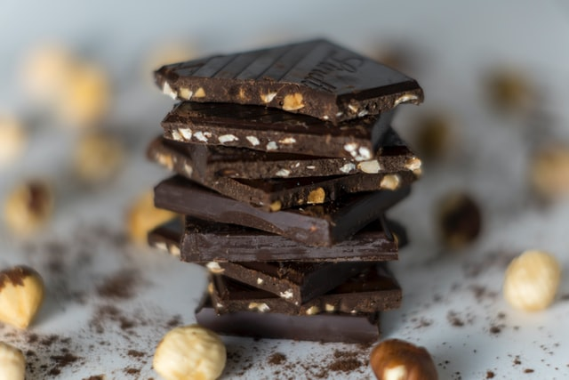

민트초코
목차
민트 초콜릿의 시작
호불호
만드는 방법
순정 초코파
순정 민트파
순정 민초파
1.민트 초콜릿의 시작
마릴린 리케츠(Marilyn Ricketts)
라는 영국 대학생이 민트농축액과 초콜릿을 섞어
'민트로열(Mint royal)'
이라는 이름의 아이스크림을 개발했고, 1위를 차지했다. 이 때 우승한 '민트로열(Mint royal)'이 오늘날 우리가 먹는 민트초코의 원형이다.
민트

초콜렛